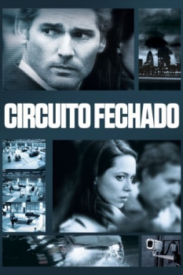

Circuito Fechado (2013)


They see your every move

Avaliação (TMDb):


6.0/10 (328 votos)
Avaliação (Usuário):
Outro Título:Closed Circuit
País:United States, 96 minutos
Idiomas falados:Inglês, Espanhol, Português
Gênero(s):Mistério, Drama, Crime, Suspense
Diretor(s):John Crowley
Codec:MPEG-2 (DVD)
Número: 937
Sinopse:
No thriller de suspense Circuito Fechado, um caso de terrorismo une, inexplicavelmente, um antigo casal na equipa de defesa, testando os limites da lealdade e colocando as suas vidas em perigo.
Elenco:
Eric Bana, Rebecca Hall, Ciarán Hinds, Jim Broadbent, Kenneth Cranham, Isaac Hempstead-Wright, Julia Stiles, Anne-Marie Duff, Riz Ahmed, Denis Moschitto
Tipo de mídia: DVD5,
Legendas: Inglês, Espanhol, Português, Castelhano
Alugado: Não
Tela: 2.35:1